Frutiger Aero— футуристическое направление в графическом дизайне, господствовавшее с середины 2000-х годов до начала 2010-х годов. Это направление часто ассоциируется с Web 2.0. Само название Frutiger Aero возникло в конце 2010 — начале 2020-х, когда стиль давно вышел из моды, но на него стали обращать внимания интернет-сообщества, посвящённые ностальгической эстетике и ретрофутуризму.
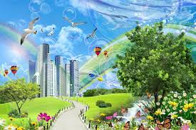
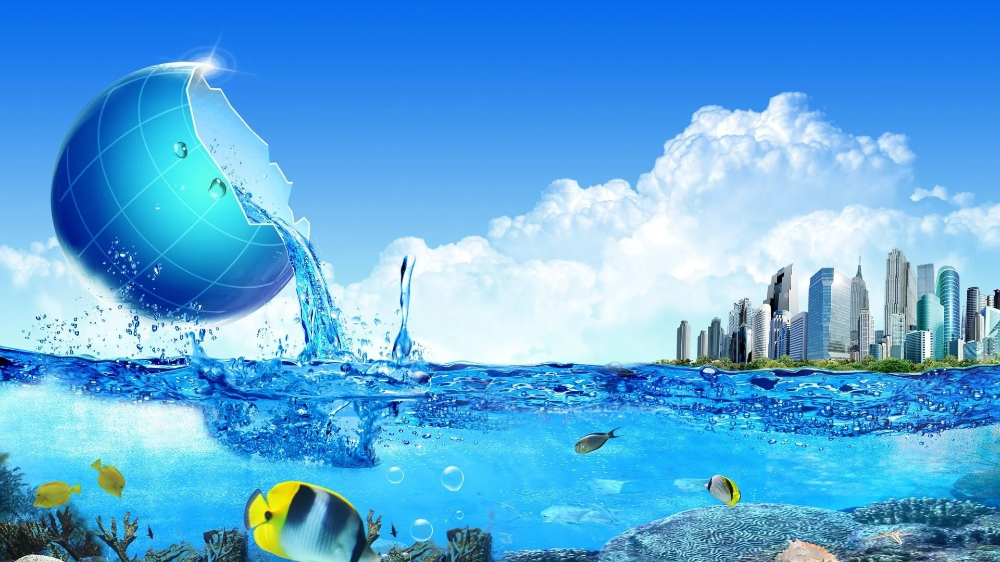
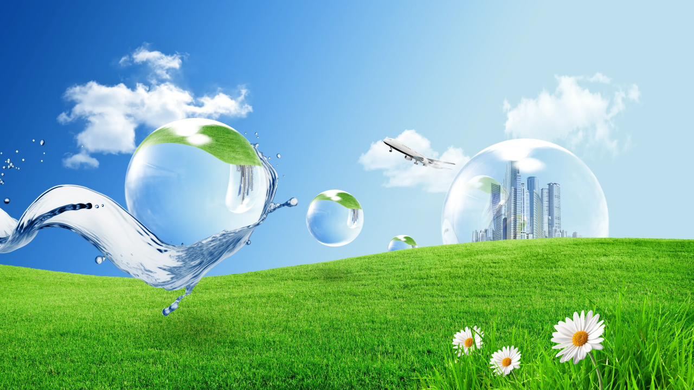
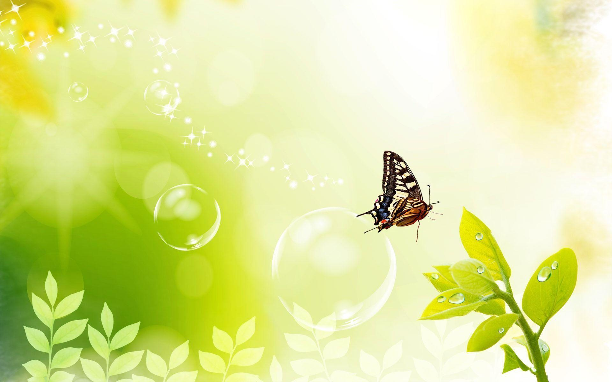
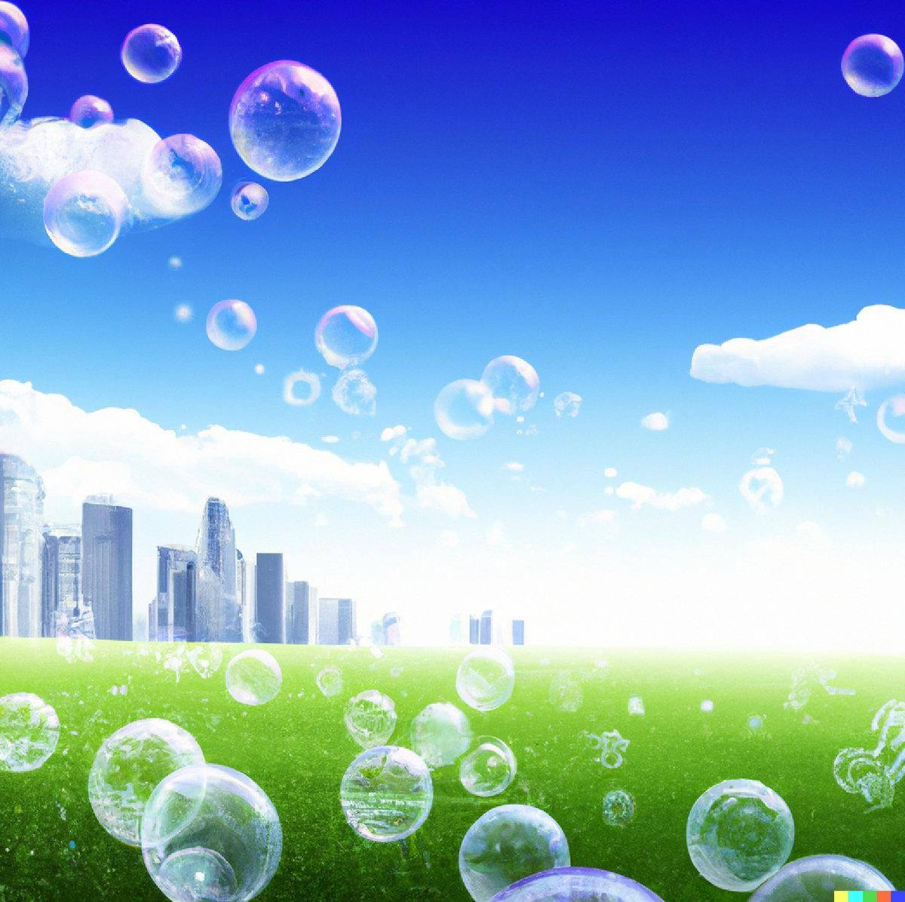
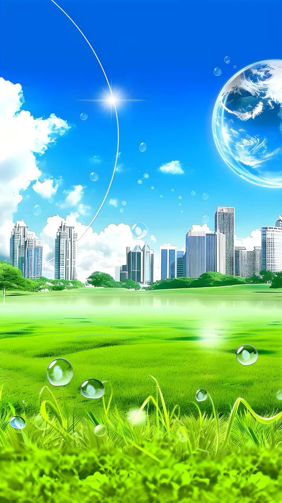
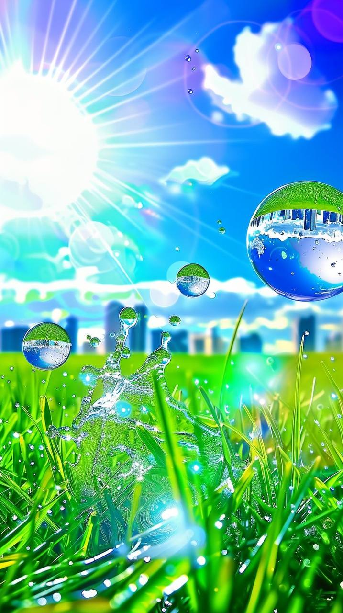
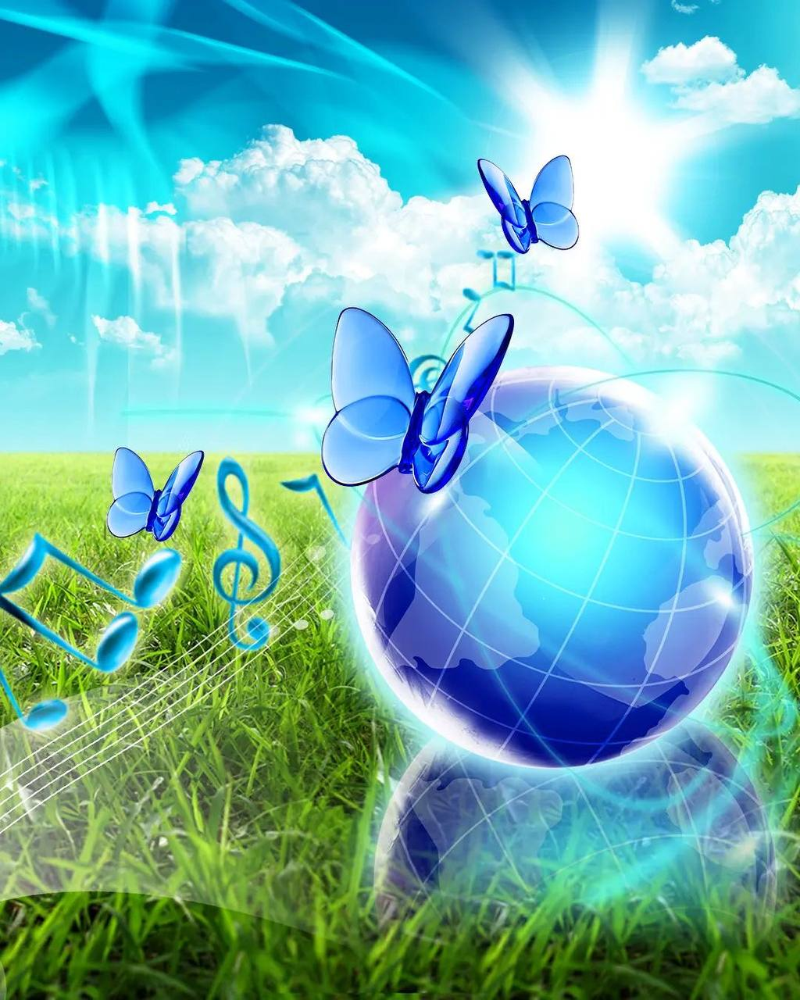
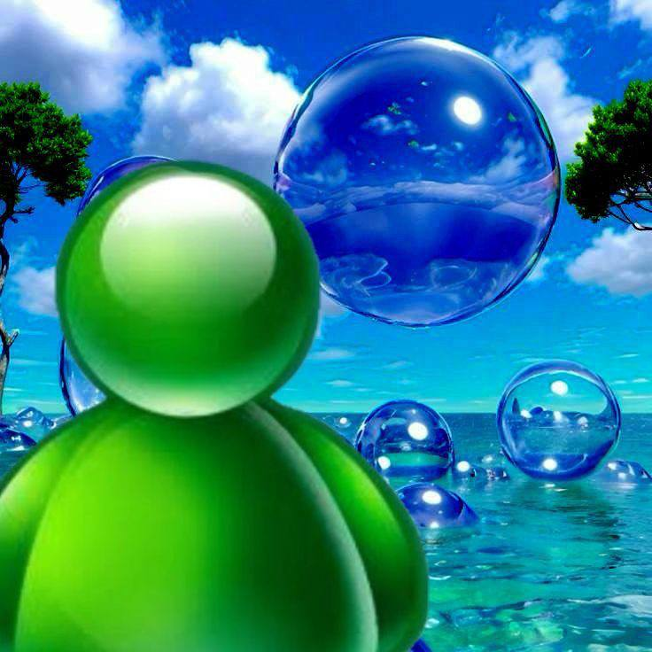
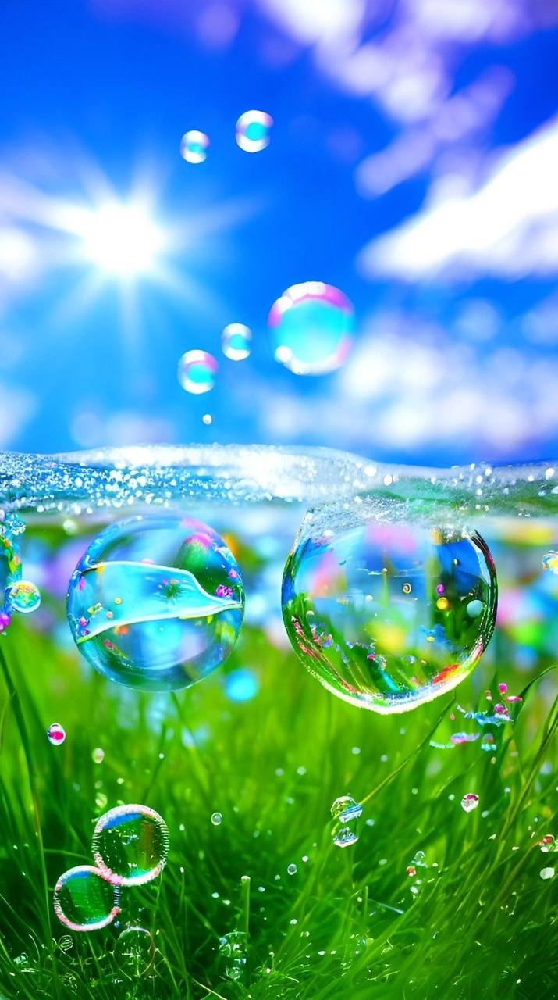
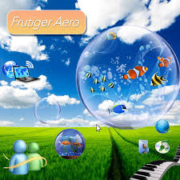
Проект Aero World 2026 — это цифровой заповедник эстетики, которая определяла наше видение будущего в начале XXI века. Frutiger Aero — это не просто дизайн, это символ эпохи, когда технологии казались дружелюбными, прозрачными и неразрывно связанными с природой.
Мы воссоздали элементы Windows Vista, 7 и раннего iOS, чтобы вернуть ощущение "свежести" — глянцевые кнопки, пузырьки воздуха и сияющие горизонты.
Использование современных CSS-фильтров размытия (backdrop-filter) позволяет достичь эффекта органического стекла, который был невозможен в обычном вебе тех лет.
Создатель - Alayse Erasen(это никнейм) и нейросеть(если бы не она, проект и не был таким красивым)
"Будущее — это сияющая поверхность, за которой скрывается бесконечный океан возможностей."
Создан сайт, добавлены страницы и также информация на них.
Добавлена мобильная версия, поскольку данная страница плохо адаптирована под мобильные версии браузеров. (!!позже будет опубликована!!)
Также, создан телеграм-канал, вы можете как следить за ним, так и скидывать туда свои идеи! Телеграм канал страницы
Обновлена галерея, добавлено в "Галерея Интерфейсов" несколько ещё примеров
Добавлены мини игры
Поздравляю вас с рождеством!
Адаптирована страница для свех устройств(для телефонов и компьютеров)
Обновлены мини игры, и также адаптированы для устройств
Удачного пользования!!!
MADE BY ALAYSE ERASEN AND AI